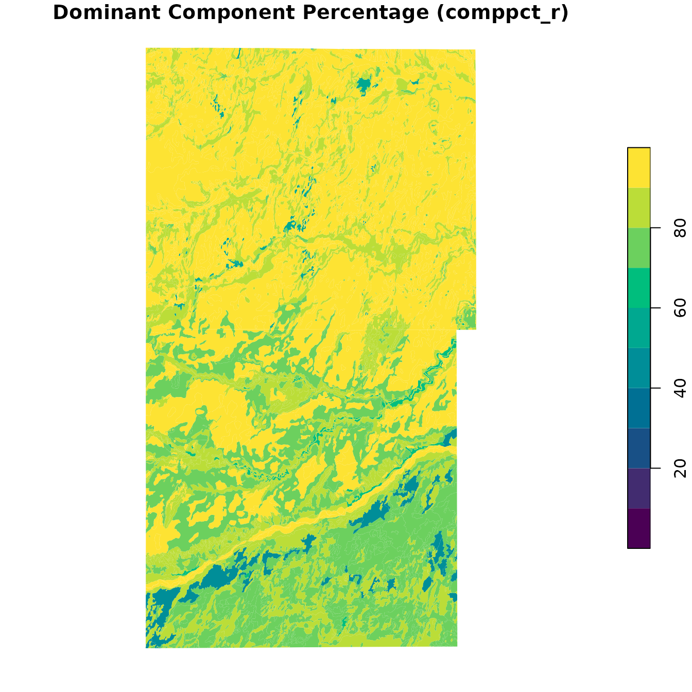
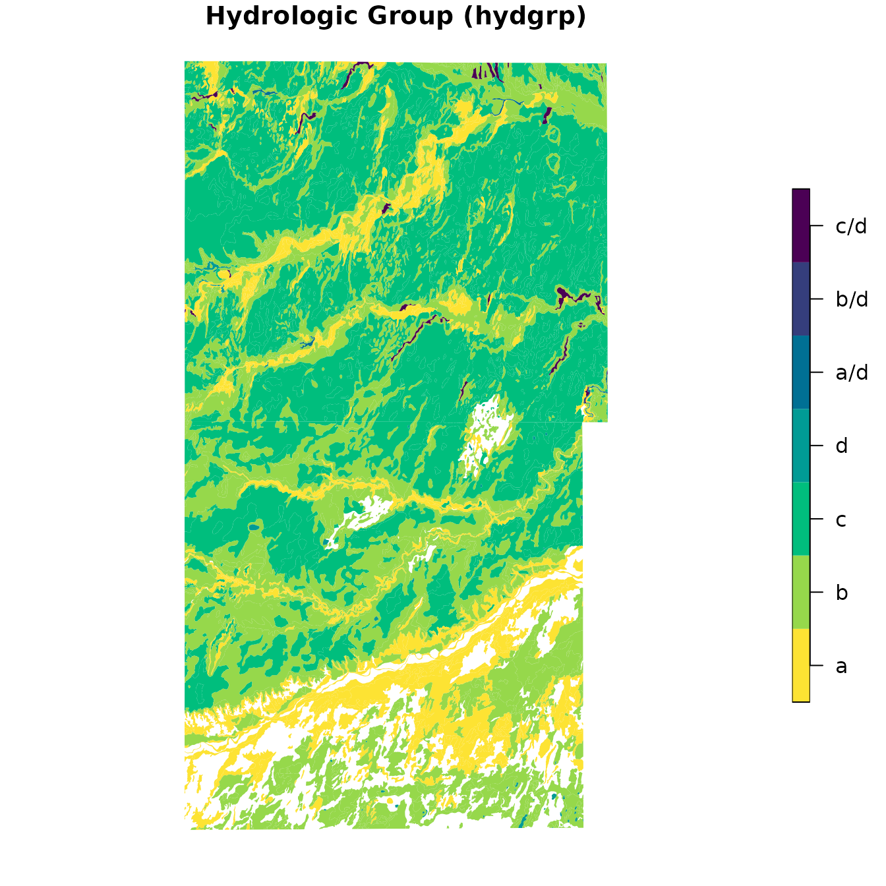
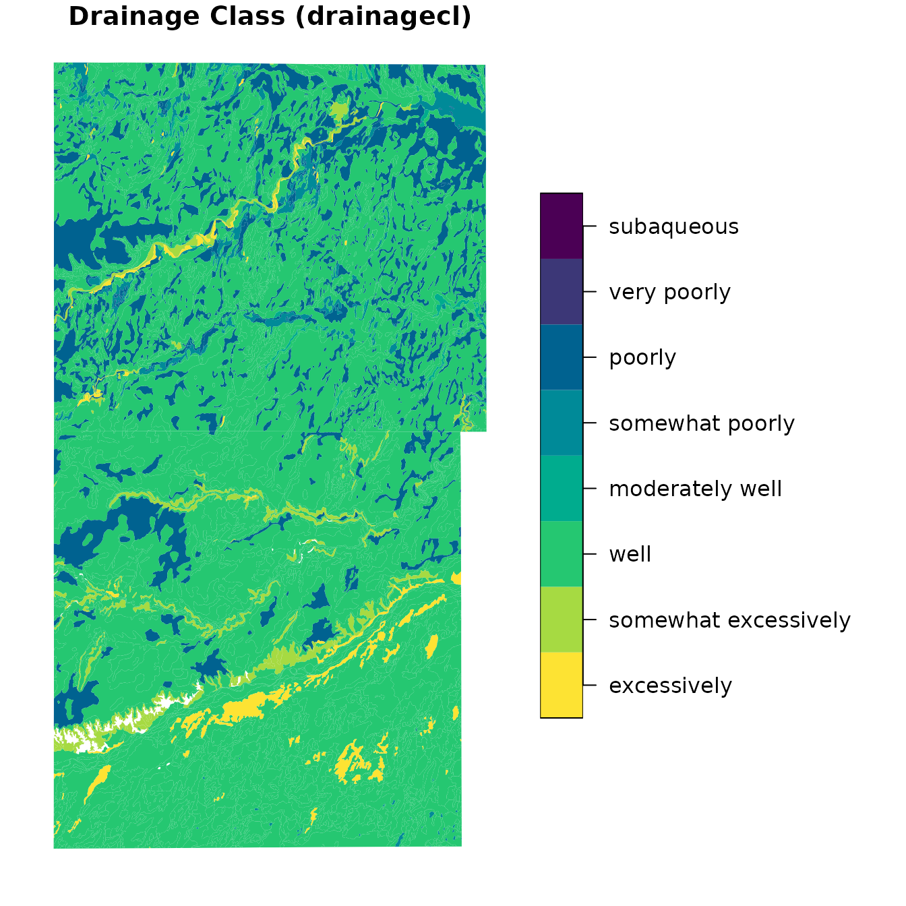

Overview
The soilDB package provides tools for accessing and
working with soil survey data from the USDA-NRCS. Two key functions,
downloadSSURGO() and createSSURGO(),
streamline the process of acquiring and preparing SSURGO data into a
local SQLite (GeoPackage) database–similar to the functionality offered
by SSURGO
Portal.
This vignette demonstrates how to use these functions with Morton and
Stanton counties, Kansas
(areasymbol = c("KS129", "KS187")).
Download SSURGO Data
downloadSSURGO() will download the official SSURGO
dataset for the specified areasymbol and return the path to
the ZIP archive.
library(soilDB)
gpkg_dir <- tempdir()
AREASYMBOLS <- c("KS129", "KS187")
ssurgo_zip <- downloadSSURGO(
areasymbol = AREASYMBOLS,
destdir = gpkg_dir
)We specify destdir as the destination directory to
download ZIP files by areasymbol from Web Soil Survey. If unspecified
exdir is the same as destdir and is the
directory the ZIP files get extracted to.
Create a Local SSURGO Database
The createSSURGO() function uses the sf and
RSQLite packages internally to build a SQLite database. The
suggested SQLite-based format to use is GeoPackage (".gpkg"
file).
# Create a local GeoPackage from the downloaded ZIP
gpkg_path <- file.path(gpkg_dir, "ssurgo.gpkg")
createSSURGO(
gpkg_path,
exdir = gpkg_dir
)Here we pass exdir so createSSURGO() knows
where to look for the data that downloadSSURGO() extracted
from ZIP files. If we supply con argument instaed of
filename we can connect to arbitrary DBIConnection objects,
which could include other SQLite connection types, DuckDB,
PostgresSQL.
The resulting .gpkg file is a spatially enabled SQLite
database that can be used in GIS software or queried directly in R.
Load and Explore the Database
Once the GeoPackage is created, you can connect to it using
DBI and explore its contents. The database follows the
SSURGO schema, which includes tables like mapunit,
component, chorizon, and spatial layers such
as the spatial map unit polygon layer, mupolygon.
library(DBI)
library(RSQLite)
# Connect to the GeoPackage
con <- dbConnect(SQLite(), gpkg_path)
# List available tables
dbListTables(con)## [1] "chaashto" "chconsistence"
## [3] "chdesgnsuffix" "chfrags"
## [5] "chorizon" "chpores"
## [7] "chstruct" "chstructgrp"
## [9] "chtexture" "chtexturegrp"
## [11] "chtexturemod" "chunified"
## [13] "cocropyld" "codiagfeatures"
## [15] "coecoclass" "coeplants"
## [17] "coerosionacc" "cogeomordesc"
## [19] "cohydriccriteria" "cointerp"
## [21] "comonth" "component"
## [23] "copm" "copmgrp"
## [25] "copwindbreak" "corestrictions"
## [27] "cosoilmoist" "cosurffrags"
## [29] "cosurfmorphgc" "cosurfmorphhpp"
## [31] "cosurfmorphmr" "cosurfmorphss"
## [33] "cotaxfmmin" "cotaxmoistcl"
## [35] "cotext" "cotreestomng"
## [37] "cotxfmother" "distinterpmd"
## [39] "distlegendmd" "distmd"
## [41] "featdesc" "featline"
## [43] "featpoint" "gpkg_contents"
## [45] "gpkg_extensions" "gpkg_geometry_columns"
## [47] "gpkg_ogr_contents" "gpkg_spatial_ref_sys"
## [49] "gpkg_tile_matrix" "gpkg_tile_matrix_set"
## [51] "laoverlap" "legend"
## [53] "mapunit" "mdstatdomdet"
## [55] "mdstatdommas" "mdstatidxdet"
## [57] "mdstatidxmas" "mdstatrshipdet"
## [59] "mdstatrshipmas" "mdstattabcols"
## [61] "mdstattabs" "muaggatt"
## [63] "muaoverlap" "muline"
## [65] "mupoint" "mupolygon"
## [67] "rtree_featline_geom" "rtree_featline_geom_node"
## [69] "rtree_featline_geom_parent" "rtree_featline_geom_rowid"
## [71] "rtree_featpoint_geom" "rtree_featpoint_geom_node"
## [73] "rtree_featpoint_geom_parent" "rtree_featpoint_geom_rowid"
## [75] "rtree_muline_geom" "rtree_muline_geom_node"
## [77] "rtree_muline_geom_parent" "rtree_muline_geom_rowid"
## [79] "rtree_mupoint_geom" "rtree_mupoint_geom_node"
## [81] "rtree_mupoint_geom_parent" "rtree_mupoint_geom_rowid"
## [83] "rtree_mupolygon_geom" "rtree_mupolygon_geom_node"
## [85] "rtree_mupolygon_geom_parent" "rtree_mupolygon_geom_rowid"
## [87] "rtree_sapolygon_geom" "rtree_sapolygon_geom_node"
## [89] "rtree_sapolygon_geom_parent" "rtree_sapolygon_geom_rowid"
## [91] "sacatalog" "sainterp"
## [93] "sapolygon" "sdvalgorithm"
## [95] "sdvattribute" "sdvfolder"
## [97] "sdvfolderattribute" "soil_metadata"
## [99] "sqlite_sequence"View Table Structure
You can inspect the structure of a specific table, such as
mapunit, which contains general information about each map
unit.
dbListFields(con, "mapunit")## [1] "musym" "muname" "mukind" "mustatus"
## [5] "muacres" "mapunitlfw_l" "mapunitlfw_r" "mapunitlfw_h"
## [9] "mapunitpfa_l" "mapunitpfa_r" "mapunitpfa_h" "farmlndcl"
## [13] "muhelcl" "muwathelcl" "muwndhelcl" "interpfocus"
## [17] "invesintens" "iacornsr" "nhiforsoigrp" "nhspiagr"
## [21] "vtsepticsyscl" "mucertstat" "lkey" "mukey"Preview Data
Preview the first few rows of the mapunit table:
dbGetQuery(con, "SELECT * FROM mapunit LIMIT 5")## musym muname mukind
## 1 1510 Atchison clay loam, 3 to 6 percent slopes Consociation
## 2 5110 Atchison fine sandy loam, 1 to 3 percent slopes Consociation
## 3 1511 Atchison loam, 1 to 3 percent slopes Consociation
## 4 1512 Atchison loam, 6 to 9 percent slopes Consociation
## 5 1515 Atchison-Rock outcrop complex, 6 to 20 percent slopes Complex
## mustatus muacres mapunitlfw_l mapunitlfw_r mapunitlfw_h mapunitpfa_l
## 1 NA 15733 NA NA NA NA
## 2 NA 62 NA NA NA NA
## 3 NA 36516 NA NA NA NA
## 4 NA 4666 NA NA NA NA
## 5 NA 3488 NA NA NA NA
## mapunitpfa_r mapunitpfa_h farmlndcl muhelcl muwathelcl
## 1 NA NA Farmland of statewide importance NA NA
## 2 NA NA Prime farmland if irrigated NA NA
## 3 NA NA Prime farmland if irrigated NA NA
## 4 NA NA Farmland of statewide importance NA NA
## 5 NA NA Farmland of statewide importance NA NA
## muwndhelcl interpfocus invesintens iacornsr nhiforsoigrp nhspiagr
## 1 NA Order 2 NA NA NA
## 2 NA Order 2 NA NA NA
## 3 NA Order 2 NA NA NA
## 4 NA Order 2 NA NA NA
## 5 NA Order 2 NA NA NA
## vtsepticsyscl mucertstat lkey mukey
## 1 NA NA 10591 1382580
## 2 NA NA 10591 1382581
## 3 NA NA 10591 1382582
## 4 NA NA 10591 1382583
## 5 NA NA 10591 1382584Join Tables
You can join tables to explore relationships between map units and their components:
query <- "
SELECT mu.musym, mu.muname, c.compname, c.comppct_r
FROM mapunit mu
JOIN component c ON mu.mukey = c.mukey
LIMIT 10
"
dbGetQuery(con, query)## musym muname compname comppct_r
## 1 1510 Atchison clay loam, 3 to 6 percent slopes Atchison 90
## 2 1510 Atchison clay loam, 3 to 6 percent slopes Otero 10
## 3 5110 Atchison fine sandy loam, 1 to 3 percent slopes Bigbow 5
## 4 5110 Atchison fine sandy loam, 1 to 3 percent slopes Atchison 70
## 5 5110 Atchison fine sandy loam, 1 to 3 percent slopes Otero 25
## 6 1511 Atchison loam, 1 to 3 percent slopes Satanta 5
## 7 1511 Atchison loam, 1 to 3 percent slopes Atchison 85
## 8 1511 Atchison loam, 1 to 3 percent slopes Otero 10
## 9 1512 Atchison loam, 6 to 9 percent slopes Atchison 80
## 10 1512 Atchison loam, 6 to 9 percent slopes Otero 20Load Spatial Data
To work with spatial features, use the sf package.
Here we demonstrate how to read the mupolygon layer:
## Reading layer `mupolygon' from data source `/tmp/RtmpHhWLeb/ssurgo.gpkg' using driver `GPKG'
## Simple feature collection with 3333 features and 4 fields
## Geometry type: POLYGON
## Dimension: XY
## Bounding box: xmin: -102.0421 ymin: 36.99309 xmax: -101.5257 ymax: 37.7385
## Geodetic CRS: WGS 84
spatial_mu## Simple feature collection with 3333 features and 4 fields
## Geometry type: POLYGON
## Dimension: XY
## Bounding box: xmin: -102.0421 ymin: 36.99309 xmax: -101.5257 ymax: 37.7385
## Geodetic CRS: WGS 84
## First 10 features:
## areasymbol spatialver musym mukey geom
## 1 KS129 5 1996 1382616 POLYGON ((-101.972 37.26513...
## 2 KS129 5 1511 1382582 POLYGON ((-101.7587 37.2546...
## 3 KS129 5 1462 1382612 POLYGON ((-101.708 37.27559...
## 4 KS129 5 1996 1382616 POLYGON ((-101.8841 37.3115...
## 5 KS129 5 1995 1382615 POLYGON ((-101.8418 37.3153...
## 6 KS129 5 1511 1382582 POLYGON ((-102.0278 37.2308...
## 7 KS129 5 1512 1382583 POLYGON ((-101.9374 37.1191...
## 8 KS129 5 1510 1382580 POLYGON ((-101.6442 37.2200...
## 9 KS129 5 1995 1382615 POLYGON ((-101.5774 37.3227...
## 10 KS129 5 1761 1382608 POLYGON ((-102.0419 37.2821...
# Plot the map units
plot(st_geometry(spatial_mu))This spatial layer can be used for mapping or spatial joins with
other geospatial datasets. The mukey column is the unique
mapunit identifier. Any SSURGO data that can be queried or aggregated to
be 1:1 with mukey can be used in thematic mapping.
Visualizing Soil Properties
You can visualize soil properties by joining tabular data with the
mupolygon layer and plotting with base R graphics.
Load Spatial and Tabular Data
## Reading layer `mupolygon' from data source `/tmp/RtmpHhWLeb/ssurgo.gpkg' using driver `GPKG'
## Simple feature collection with 3333 features and 4 fields
## Geometry type: POLYGON
## Dimension: XY
## Bounding box: xmin: -102.0421 ymin: 36.99309 xmax: -101.5257 ymax: 37.7385
## Geodetic CRS: WGS 84
# Read tabular data
mapunit <- dbReadTable(con, "mapunit")
component <- dbReadTable(con, "component")
# Disconnect when done
dbDisconnect(con)Example 1: Dominant Component Percentage
(comppct_r)
Here we see map units symbolised by the dominant component percentage. Numbers closer to 100% are more “pure” concepts.
# Get dominant component per map unit
dominant_comp <- aggregate(
comppct_r ~ mukey,
data = component,
max
)
# Join with spatial data
spatial_mu$comppct_r <- dominant_comp$comppct_r[match(spatial_mu$mukey, dominant_comp$mukey)]
# Plot (small subset of extent)
plot(
spatial_mu["comppct_r"],
main = "Dominant Component Percentage (comppct_r)",
breaks = seq(0, 100, 10),
key.pos = 4,
border = NA,
pal = hcl.colors(10)
)
Example 2: Hydrologic Group (hydgrp)
Here we see map unit dominant condition Hydrologic Group.
# Get most common hydgrp per mukey
hydgrp_tab <- aggregate(
hydgrp ~ mukey,
data = component,
function(x) names(sort(table(x), decreasing = TRUE))[1]
)
# Convert to ordered factor
hydgrp_tab[[2]] <- NASISChoiceList(hydgrp_tab)[[2]]
# Join with spatial data
spatial_mu$hydgrp <- hydgrp_tab$hydgrp[match(spatial_mu$mukey, hydgrp_tab$mukey)]
spatial_mu## Simple feature collection with 3333 features and 6 fields
## Geometry type: POLYGON
## Dimension: XY
## Bounding box: xmin: -102.0421 ymin: 36.99309 xmax: -101.5257 ymax: 37.7385
## Geodetic CRS: WGS 84
## First 10 features:
## areasymbol spatialver musym mukey geom comppct_r
## 1 KS129 5 1996 1382616 POLYGON ((-101.972 37.26513... 80
## 2 KS129 5 1511 1382582 POLYGON ((-101.7587 37.2546... 85
## 3 KS129 5 1462 1382612 POLYGON ((-101.708 37.27559... 70
## 4 KS129 5 1996 1382616 POLYGON ((-101.8841 37.3115... 80
## 5 KS129 5 1995 1382615 POLYGON ((-101.8418 37.3153... 75
## 6 KS129 5 1511 1382582 POLYGON ((-102.0278 37.2308... 85
## 7 KS129 5 1512 1382583 POLYGON ((-101.9374 37.1191... 80
## 8 KS129 5 1510 1382580 POLYGON ((-101.6442 37.2200... 90
## 9 KS129 5 1995 1382615 POLYGON ((-101.5774 37.3227... 75
## 10 KS129 5 1761 1382608 POLYGON ((-102.0419 37.2821... 93
## hydgrp
## 1 b
## 2 b
## 3 b
## 4 b
## 5 b
## 6 b
## 7 a
## 8 a
## 9 b
## 10 c
# Plot
plot(
spatial_mu["hydgrp"],
main = "Hydrologic Group (hydgrp)",
key.pos = 4,
border = NA,
pal = rev(hcl.colors(7))
)
Example 3: Drainage Class (drainagecl)
Here we see map unit dominant condition Drainage Class.
# Get most common drainage class per mukey
drainage_tab <- aggregate(
drainagecl ~ mukey,
data = component,
function(x) names(sort(table(x), decreasing = TRUE))[1]
)
# Convert to ordered factor
drainage_tab[[2]] <- NASISChoiceList(drainage_tab)[[2]]
# Join with spatial data
spatial_mu$drainagecl <- drainage_tab$drainagecl[match(spatial_mu$mukey, drainage_tab$mukey)]
# Plot
plot(
spatial_mu["drainagecl"],
main = "Drainage Class (drainagecl)",
border = NA,
key.pos = 4,
pal = rev(hcl.colors(8))
)
The previous examples show how to visualize key soil properties using
only base R and sf.
The aggregation of dominant component to map unit level values is one of the simplest, and most common, transformations of the SSURGO data for creating maps.
You can adapt the aggregation logic depending on your needs (e.g.,
max, mean, or most frequent value). Many soilDB functions include
default aggregations, and you can write custom queries of your own using
SDA_query() or DBI dbGetQuery().
Query and Aggregation Functions
This section describes some existing options in the
soilDB package for querying and aggregating data for
thematic maps.
In the future this section will be expanded.
All of the get_SDA_*() “SSURGO On Demand” functions can
be applied to local copies of the SSURGO database by passing the
dsn argument (either a path to a SQLite database or a
DBIConnection object).
- “SSURGO On Demand” Queries
- Hydric Soils:
get_SDA_hydric() - Soil Interpretations:
get_SDA_interpretation() - Mapunit Aggregate Attributes :
get_SDA_muaggatt() - Parent Material Groups:
get_SDA_pmgroupname() - Component and Horizon Properties:
get_SDA_property() - Component Ecological Classes:
get_SDA_coecoclass() - Component Surface Morphometry:
get_SDA_cosurfmorph()
- Hydric Soils:
Alternative Tools
For users who prefer a Python-based solution, the SSURGOPortal R package wraps the official SSURGO Portal Python code for use in R.
Conclusion
The downloadSSURGO() and createSSURGO()
functions provide a reproducible and scriptable way to access SSURGO
data for offline spatial and tabular analysis in R.